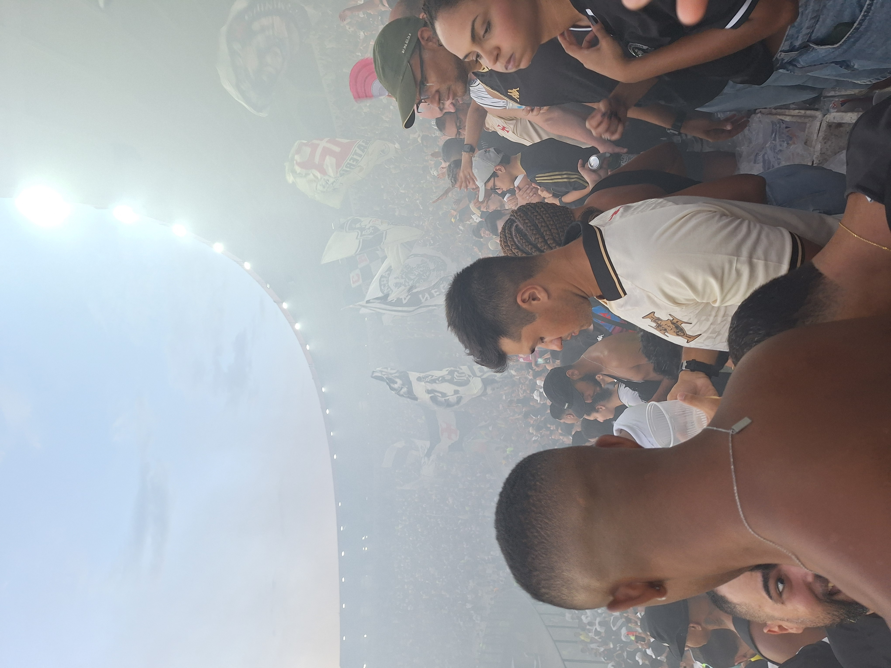
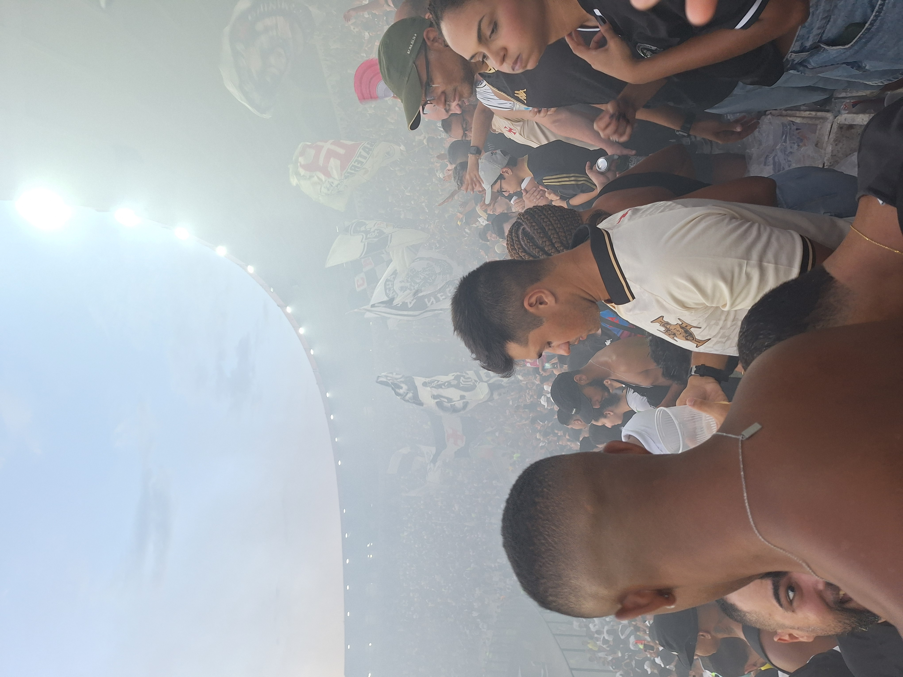
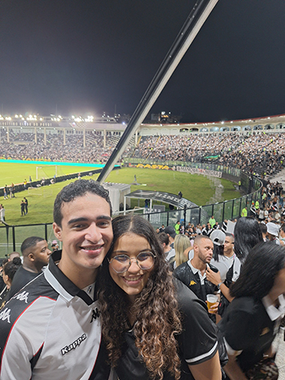
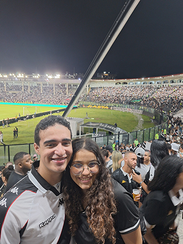
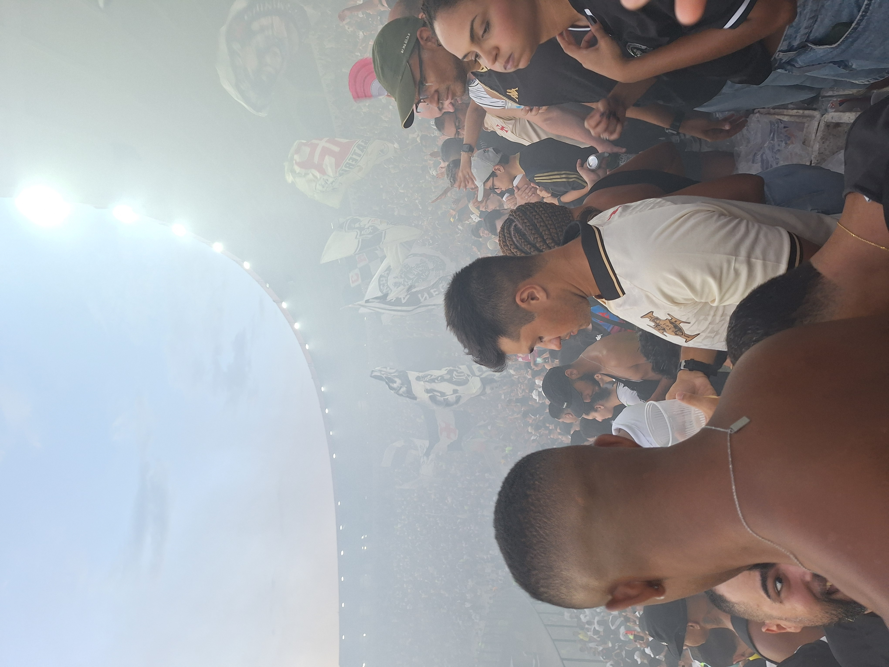
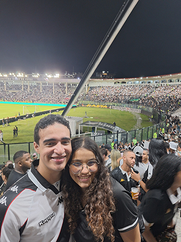

 

Pessoas são as extensões do time. São além da torcida: São nossos amigos, nossos companheiros, nossos jornalistas, alguns desconhecidos que, por obra do acaso, são parte de nós. Torcida, amantes, uma única só voz.

